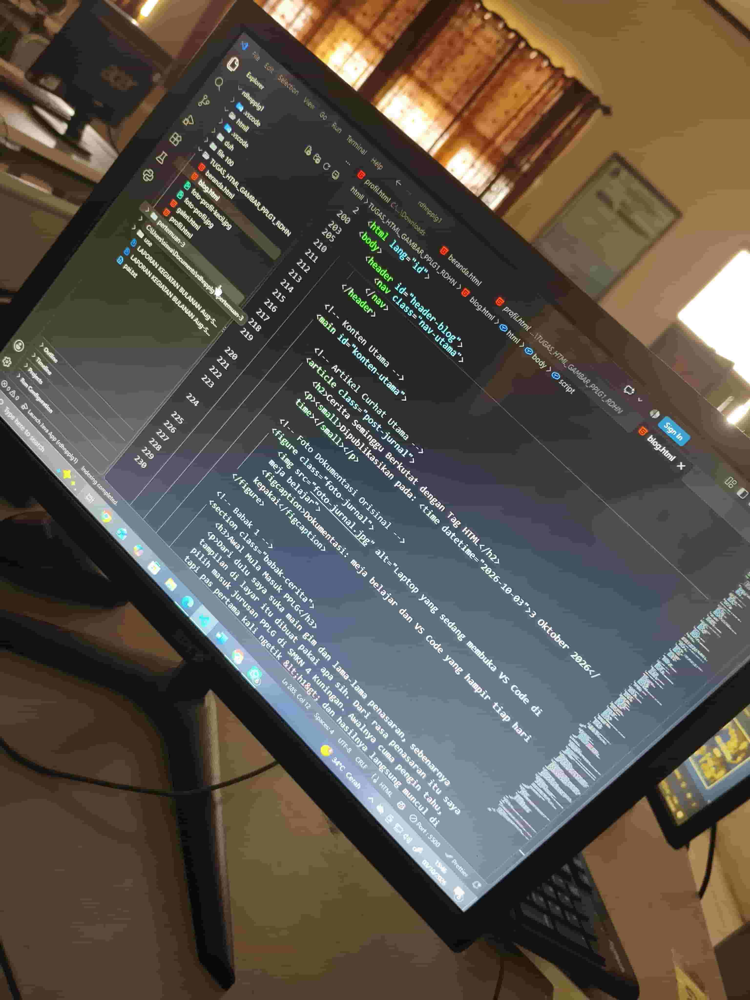

Cerita Seminggu Bertarung dengan HTML

Awal Mula Masuk PPLG
Dari dulu saya suka main game sih, sering kepikiran sebenarnya tampilan di layar itu dibuat pakai apa sih? kok bisa gitu sih?. Mulai dari smp kelas 8 udah nyoba dasar html. Dari rasa penasaran itu saya pilih masuk jurusan PPLG di SMKN 4 Kuningan. Awalnya cuma pengin tahu, tapi pas pertama kali ngetik <h1> dan hasilnya langsung muncul di browser, rasanya seruuuuu bangetttttttttttt. Dari situ saya mulai suka ngoding.
Drama Kena Bug & Layar Merah
Momen paling bikin pusing itu waktu bikin tabel jadwal pelajaran. Rowspan sama colspan kelihatannya gampang, tapi pas salah hitung satu sel aja baris di bawahnya langsung geser trus tabelnya berantakan. Saya sampai ngitung ulang jam pelajaran satu per satu, apalagi jadwal Rabu dan Jumat jamnya beda sendiri. Ya endingnya malah jadi paham kenapa tag penutup dan kerapian kode itu penting.
Pelajaran & Harapan Saya
Yang saya dapat sejauh ini: gausah panik kalo tampilan error, coba cek pelan-pelan dari tag yang paling deket. Harapan saya, setelah lulus dari PPLG pengen nanti bisa kerja atau bikin proyek web sendiri. Sekarang saya masih terus belajar HTML, CSS, dan PHP sedikit.